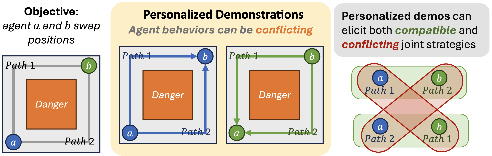
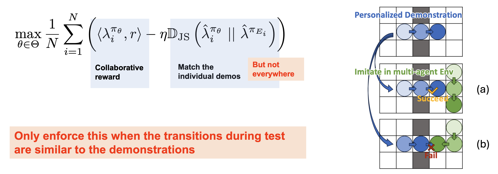
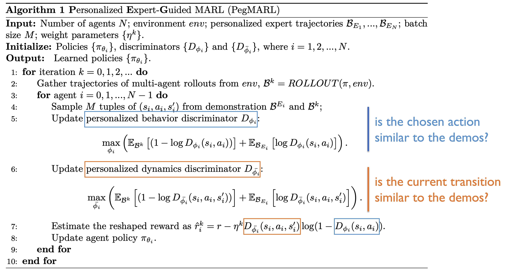

Multi-Agent Reinforcement Learning (MARL) algorithms face the challenge of efficient exploration due to the exponential increase in the size of the joint state-action space. While demonstration-guided learning has proven beneficial in single-agent settings, its direct applicability to MARL is hindered by the practical difficulty of obtaining joint expert demonstrations.
In this work, we introduce a novel concept of personalized expert demonstrations, tailored for each individual agent or, more broadly, each individual type of agent within a heterogeneous team. These demonstrations solely pertain to single-agent behaviors and how each agent can achieve personal goals without encompassing any cooperative elements, thus naively imitating them will not achieve cooperation due to potential conflicts.
To this end, we propose an approach that selectively utilizes personalized expert demonstrations as guidance and allows agents to learn to cooperate, namely personalized expert-guided MARL (PegMARL). This algorithm utilizes two discriminators: the first provides incentives based on the alignment of individual agent behavior with demonstrations, and the second regulates incentives based on whether the behaviors lead to the desired outcome.
We evaluate PegMARL using personalized demonstrations in both discrete and continuous environments. The results demonstrate that PegMARL learns near-optimal policies even when provided with suboptimal demonstrations and outperforms state-of-the-art MARL algorithms in solving coordinated tasks. We also showcase PegMARL’s capability of leveraging joint demonstrations in the StarCraft scenario and converging effectively even with demonstrations from non-co-trained policies.
Current approaches to Multi-Agent Reinforcement Learning utilize joint demonstrations to accelerate policy training. However, these demonstrations must come from compatible, jointly-trained policies, creating a significant limitation in practice.
What does compatibility mean in practice?
In this simple scenario where agents a and b need to swap positions, compatibility ensures they choose complementary paths to avoid collision. When agent a takes path 1 and agent b takes path 2 (or vice versa), they successfully navigate around the danger zone. Joint-trained policies naturally develop this compatibility, while policies from different sources may lead to conflicting behaviors.
Experimental results from the DM2 paper:
The results demonstrate the importance of demonstration compatibility. When demonstrations come from jointly-trained policy (blue and orange curves), performances are strong. However, with mixed-source demonstrations (green and yellow curves), performances significantly degrade, highlighting the limitation of requiring compatible demonstrations.
Additionally, these methods require collecting new joint demonstrations whenever the agent configuration changes—whether in the number or types of agents—posing a major scalability challenge.
In contrast, personalized demonstrations focused on individual agent behaviors can be reused across different team configurations, making them more practical and adaptable for real-world applications.
PegMARL introduces a novel approach to Multi-Agent Reinforcement Learning that leverages personalized demonstrations. The key innovation is the use of single-agent demonstrations as guidance for efficient exploration while allowing agents to learn cooperative behaviors from sparse environmental feedbacks.
Unlike with co-trained joint demonstrations where direct distribution matching (as in DM2) works effectively, personalized demonstrations present a unique challenge — they show individual behaviors but lack cooperative elements. Simply mimicking these personalized demonstrations can lead to conflicting behaviors when multiple agents interact.
PegMARL addresses this challenge through selective distribution matching. Each agent is encouraged to match the state-action distribution of their respective personalized demonstrations, but with a crucial distinction — agents must be selective about when to follow these demonstrations.
The key insight, illustrated in the right example, is to consider whether the current situation allows the agent to execute similar transitions as shown in the demonstrations. The blue agent has a demonstration showing a rightward movement. In case (a), when the green agent moves downward, the blue agent can successfully move right as demonstrated. However, in case (b), when the green agent turns left, the blue agent cannot move right due to collision. This illustrates our central intuition: agents should follow demonstration guidance only when their local state transitions can match those in the demonstrations. When other agents' actions prevent such transitions, alternative behaviors must be developed.
We implement this key insight through two specialized discriminators: (1) A personalized behavior discriminator that evaluates local state-action pairs, providing positive incentives for actions that align with demonstrations and negative incentives for divergent ones. (2) A personalized dynamics discriminator that assesses whether a local state-action pair leads to state transitions similar to those in the demonstrations, adjusting the incentive weight accordingly. Together, these discriminators enable agents to selectively follow helpful demonstration behaviors while developing cooperative strategies when demonstration behaviors would conflict.
We evaluate PegMARL across multiple environments including discrete and continuous control tasks. The results show that:
Learning curves of PegMARL versus other baseline methods under the lava scenario (discrete).
Learning curves of PegMARL versus other baseline methods under the lava scenario (discrete).
Learning curves of PegMARL versus other baseline methods under the modified cooperative navigation scenario (continuous).
Learning curves of PegMARL versus DM2 under the SMAC scenarios. The suffix “diff” in the legend indicates that the joint demonstrations used are sampled from non-co-trained policies. Otherwise, the demonstrations are sampled from co-trained policies.
@article{
yu2025beyond,
title={Beyond Joint Demonstrations: Personalized Expert Guidance for Efficient Multi-Agent Reinforcement Learning},
author={Peihong Yu and Manav Mishra and Alec Koppel and Carl Busart and Priya Narayan and Dinesh Manocha and Amrit Singh Bedi and Pratap Tokekar},
journal={Transactions on Machine Learning Research},
issn={2835-8856},
year={2025},
url={https://openreview.net/forum?id=kzPNHQ8ByY},
note={}
}